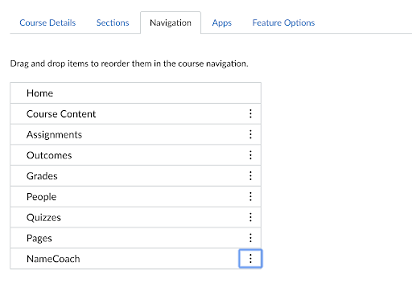
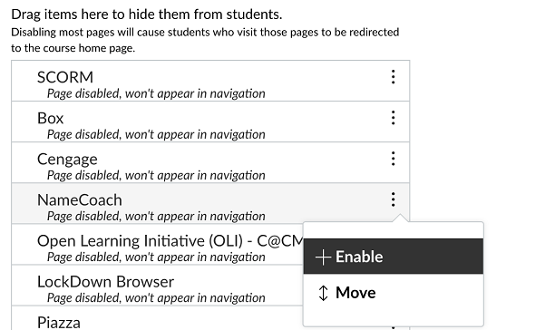

Enable NameCoach in your Canvas course
If you do not see NameCoach listed in the left navigation of your Canvas course, you can easily add it.
- Click on the “Settings” left navigation item.
- On the Settings page, click on the “Navigation” tab (located at the top of the page).
 - On this page, you should see two containers of navigation items: enabled and disabled items. Find the NameCoach item from the container of disabled navigation items.
- Next to the NameCoach item, click on the three dots to expose a menu. Select “Enable.”
 - Don’t forget to click the Save button at the bottom of the page. Now you should see NameCoach in your Canvas course left navigation.